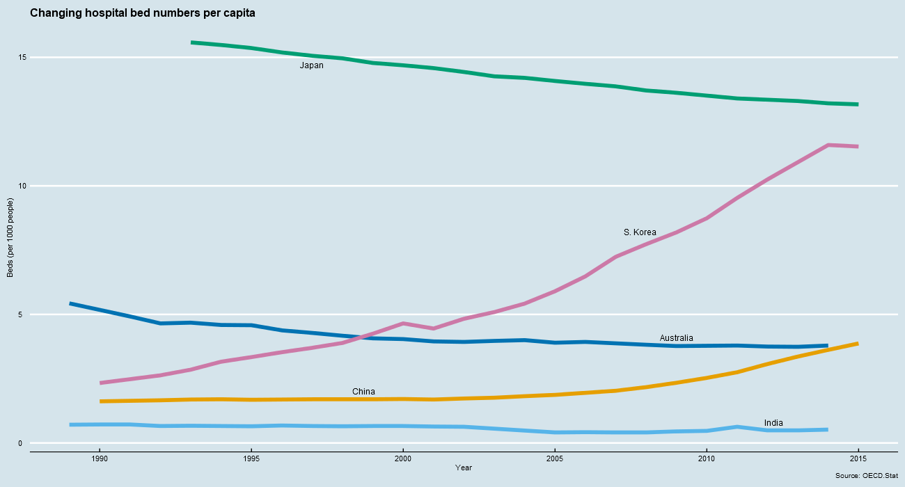

Hospital beds per capita in the Asia-Pacific
Trends in hospital bed numbers, as a function of population, in five countries in the Asia-Pacific.
Australia: A closer look

Hospital beds per capita have been in steady decline in Australia since 1960, with a small period of rise in the mid-1970s. This has been partly a natural consequence of population growth, and partly due to a marked cutting back of hospital beds in between 1980-2000. Since the turn of the century, however, there has been a renewed investment in hospital beds, as depicted in the following graph. This investment has not been sufficient to reverse the continued decline in hospital beds per person.

Main tools: R, tidyverse
How they were used: I explored, tidied, and visualised the data.